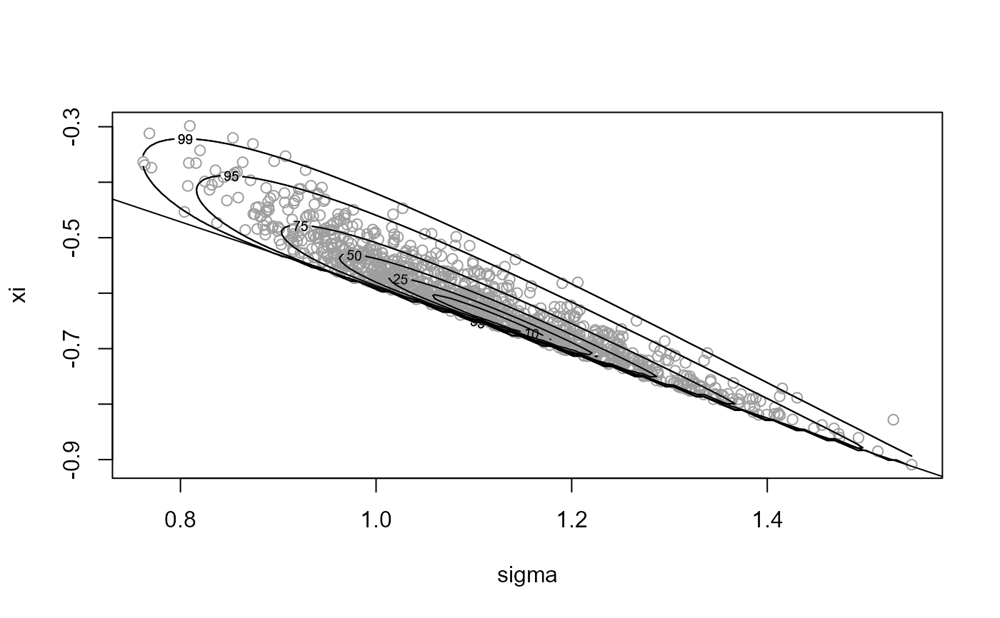

Uses the generalized ratio-of-uniforms method to simulate from a distribution with log-density \(log f\) (up to an additive constant). \(f\) must be bounded, perhaps after a transformation of variable. The file file `user_fns.cpp` that is sourced before running the examples below is available at the rust Github page at https://github.com/paulnorthrop/rust/blob/master/src/user_fns.cpp.
ru_rcpp( logf, ..., n = 1, d = 1, init = NULL, trans = c("none", "BC", "user"), phi_to_theta = NULL, log_j = NULL, user_args = list(), lambda = rep(1L, d), lambda_tol = 1e-06, gm = NULL, rotate = ifelse(d == 1, FALSE, TRUE), lower = rep(-Inf, d), upper = rep(Inf, d), r = 1/2, ep = 0L, a_algor = if (d == 1) "nlminb" else "optim", b_algor = c("nlminb", "optim"), a_method = c("Nelder-Mead", "BFGS", "CG", "L-BFGS-B", "SANN", "Brent"), b_method = c("Nelder-Mead", "BFGS", "CG", "L-BFGS-B", "SANN", "Brent"), a_control = list(), b_control = list(), var_names = NULL, shoof = 0.2 )
Arguments
| logf | An external pointer to a compiled C++ function returning the
log of the target density \(f\).
This function should return |
|---|---|
| ... | Further arguments to be passed to |
| n | A numeric scalar. Number of simulated values required. |
| d | A numeric scalar. Dimension of f. |
| init | A numeric vector. Initial estimates of the mode of |
| trans | A character scalar. "none" for no transformation, "BC" for
Box-Cox transformation, "user" for a user-defined transformation.
If |
| phi_to_theta | An external pointer to a compiled C++ function returning
(the inverse) of the transformation from theta to phi used to ensure
positivity of phi prior to Box-Cox transformation. The argument is
phi and the returned value is theta. If |
| log_j | An external pointer to a compiled C++ function returning the log of the Jacobian of the transformation from theta to phi, i.e. based on derivatives of phi with respect to theta. Takes theta as its argument. |
| user_args | A list of numeric components. If |
| lambda | Either
|
| lambda_tol | A numeric scalar. Any values in lambda that are less
than |
| gm | A numeric vector. Box-cox scaling parameters (optional). If
|
| rotate | A logical scalar. If TRUE ( |
| lower, upper | Numeric vectors. Lower/upper bounds on the arguments of
the function after any transformation from theta to phi implied by
the inverse of |
| r | A numeric scalar. Parameter of generalized ratio-of-uniforms. |
| ep | A numeric scalar. Controls initial estimates for optimizations
to find the b-bounding box parameters. The default ( |
| a_algor, b_algor | Character scalars. Either "nlminb" or "optim". Respective optimization algorithms used to find a(r) and (bi-(r), bi+(r)). |
| a_method, b_method | Character scalars. Respective methods used by
|
| a_control, b_control | Lists of control arguments to |
| var_names | A character vector. Names to give to the column(s) of the simulated values. |
| shoof | A numeric scalar in [0, 1]. Sometimes a spurious
non-zero convergence indicator is returned from
|
Value
An object of class "ru" is a list containing the following components:
An n by d matrix of simulated values.
A (2 * d + 1) by d + 2 matrix of
ratio-of-uniforms bounding box information, with row names indicating
the box parameter. The columns contain
- column 1
values of box parameters.
- columns 2 to (2+
d-1) values of variables at which these box parameters are obtained.
- column 2+
d convergence indicators.
ru and relocation of the
mode to the origin means that the first row of box will always
be c(1, rep(0, d)).A numeric scalar. An estimate of the probability of acceptance.
A numeric scalar. The dimension of logf.
A function. logf supplied by the user, but
with f scaled by the maximum of the target density used in the
ratio-of-uniforms method (i.e. logf_rho), to avoid numerical
problems in contouring f in plot.ru when
d = 2.
A function. The target function actually used in the ratio-of-uniforms algorithm.
An n by d matrix of values simulated
from the function used in the ratio-of-uniforms algorithm.
A list of further arguments to logf.
A list of further arguments to logf_rho.
Note: this component is returned by ru_rcpp but not
by ru.
The estimated mode of the target density f, after any Box-Cox transformation and/or user supplied transformation, but before mode relocation.
Details
If trans = "none" and rotate = FALSE then ru
implements the (multivariate) generalized ratio of uniforms method
described in Wakefield, Gelfand and Smith (1991) using a target
density whose mode is relocated to the origin (`mode relocation') in the
hope of increasing efficiency.
If trans = "BC" then marginal Box-Cox transformations of each of
the d variables is performed, with parameters supplied in
lambda. The function phi_to_theta may be used, if
necessary, to ensure positivity of the variables prior to Box-Cox
transformation.
If trans = "user" then the function phi_to_theta enables
the user to specify their own transformation.
In all cases the mode of the target function is relocated to the origin after any user-supplied transformation and/or Box-Cox transformation.
If d is greater than one and rotate = TRUE then a rotation
of the variable axes is performed after mode relocation. The
rotation is based on the Choleski decomposition (see chol) of the
estimated Hessian (computed using optimHess
of the negated
log-density after any user-supplied transformation or Box-Cox
transformation. If any of the eigenvalues of the estimated Hessian are
non-positive (which may indicate that the estimated mode of logf
is close to a variable boundary) then rotate is set to FALSE
with a warning. A warning is also given if this happens when
d = 1.
The default value of the tuning parameter r is 1/2, which is
likely to be close to optimal in many cases, particularly if
trans = "BC".
See vignette("rust-b-using-rcpp-vignette", package = "rust") and
vignette("rust-a-vignette", package = "rust") for full details.
References
Wakefield, J. C., Gelfand, A. E. and Smith, A. F. M. (1991) Efficient generation of random variates via the ratio-of-uniforms method. Statistics and Computing (1991), 1, 129-133. http://dx.doi.org/10.1007/BF01889987.
Eddelbuettel, D. and Francois, R. (2011). Rcpp: Seamless R and C++ Integration. Journal of Statistical Software, 40(8), 1-18. http://www.jstatsoft.org/v40/i08/.
Eddelbuettel, D. (2013). Seamless R and C++ Integration with Rcpp, Springer, New York. ISBN 978-1-4614-6867-7.
See also
ru for a version of ru_rcpp that
accepts R functions as arguments.
summary.ru for summaries of the simulated values
and properties of the ratio-of-uniforms algorithm.
plot.ru for a diagnostic plot.
find_lambda_one_d_rcpp to produce (somewhat)
automatically a list for the argument lambda of ru for the
d = 1 case.
find_lambda_rcpp to produce (somewhat) automatically
a list for the argument lambda of ru for any value of
d.
optim for choices of the arguments
a_method, b_method, a_control and b_control.
nlminb for choices of the arguments
a_control and b_control.
optimHess for Hessian estimation.
chol for the Choleski decomposition.
Examples
n <- 1000 # Normal density =================== # One-dimensional standard normal ---------------- ptr_N01 <- create_xptr("logdN01") x <- ru_rcpp(logf = ptr_N01, d = 1, n = n, init = 0.1) # Two-dimensional standard normal ---------------- ptr_bvn <- create_xptr("logdnorm2") rho <- 0 x <- ru_rcpp(logf = ptr_bvn, rho = rho, d = 2, n = n, init = c(0, 0)) # Two-dimensional normal with positive association =================== rho <- 0.9 # No rotation. x <- ru_rcpp(logf = ptr_bvn, rho = rho, d = 2, n = n, init = c(0, 0), rotate = FALSE) # With rotation. x <- ru_rcpp(logf = ptr_bvn, rho = rho, d = 2, n = n, init = c(0, 0)) # Using general multivariate normal function. ptr_mvn <- create_xptr("logdmvnorm") covmat <- matrix(rho, 2, 2) + diag(1 - rho, 2) x <- ru_rcpp(logf = ptr_mvn, sigma = covmat, d = 2, n = n, init = c(0, 0)) # Three-dimensional normal with positive association ---------------- covmat <- matrix(rho, 3, 3) + diag(1 - rho, 3) # No rotation. x <- ru_rcpp(logf = ptr_mvn, sigma = covmat, d = 3, n = n, init = c(0, 0, 0), rotate = FALSE) # With rotation. x <- ru_rcpp(logf = ptr_mvn, sigma = covmat, d = 3, n = n, init = c(0, 0, 0)) # Log-normal density =================== ptr_lnorm <- create_xptr("logdlnorm") mu <- 0 sigma <- 1 # Sampling on original scale ---------------- x <- ru_rcpp(logf = ptr_lnorm, mu = mu, sigma = sigma, d = 1, n = n, lower = 0, init = exp(mu)) # Box-Cox transform with lambda = 0 ---------------- lambda <- 0 x <- ru_rcpp(logf = ptr_lnorm, mu = mu, sigma = sigma, d = 1, n = n, lower = 0, init = exp(mu), trans = "BC", lambda = lambda) # Equivalently, we could use trans = "user" and supply the (inverse) Box-Cox # transformation and the log-Jacobian by hand ptr_phi_to_theta_lnorm <- create_phi_to_theta_xptr("exponential") ptr_log_j_lnorm <- create_log_j_xptr("neglog") x <- ru_rcpp(logf = ptr_lnorm, mu = mu, sigma = sigma, d = 1, n = n, init = 0.1, trans = "user", phi_to_theta = ptr_phi_to_theta_lnorm, log_j = ptr_log_j_lnorm) # Gamma (alpha, 1) density =================== # Note: the gamma density in unbounded when its shape parameter is < 1. # Therefore, we can only use trans="none" if the shape parameter is >= 1. # Sampling on original scale ---------------- ptr_gam <- create_xptr("logdgamma") alpha <- 10 x <- ru_rcpp(logf = ptr_gam, alpha = alpha, d = 1, n = n, lower = 0, init = alpha) alpha <- 1 x <- ru_rcpp(logf = ptr_gam, alpha = alpha, d = 1, n = n, lower = 0, init = alpha)#> Warning: The Hessian of the target log-density at its mode is not positive #> definite. This may not be a problem, but it may be that a mode #> at/near a parameter boundary has been found and/or that the target #> function is unbounded.#> It might be worth using the option trans = ``BC''.# Box-Cox transform with lambda = 1/3 works well for shape >= 1. ----------- alpha <- 1 x <- ru_rcpp(logf = ptr_gam, alpha = alpha, d = 1, n = n, trans = "BC", lambda = 1/3, init = alpha) summary(x)#> #> Call: #> ru_rcpp(logf = ptr_gam, alpha = alpha, n = n, d = 1, init = alpha, #> trans = "BC", lambda = 1/3) #> #> ru bounding box: #> box vals1 conv #> a 1.000000 0.000000 0 #> b1minus -1.051825 -1.609437 0 #> b1plus 1.096590 1.774103 0 #> #> estimated probability of acceptance: #> [1] 0.7806401 #> #> sample summary #> V1 #> Min. :0.000329 #> 1st Qu.:0.284083 #> Median :0.713134 #> Mean :1.031599 #> 3rd Qu.:1.438009 #> Max. :7.196189# Equivalently, we could use trans = "user" and supply the (inverse) Box-Cox # transformation and the log-Jacobian by hand lambda <- 1/3 ptr_phi_to_theta_bc <- create_phi_to_theta_xptr("bc") ptr_log_j_bc <- create_log_j_xptr("bc") x <- ru_rcpp(logf = ptr_gam, alpha = alpha, d = 1, n = n, trans = "user", phi_to_theta = ptr_phi_to_theta_bc, log_j = ptr_log_j_bc, user_args = list(lambda = lambda), init = alpha) summary(x)#> #> Call: #> ru_rcpp(logf = ptr_gam, alpha = alpha, n = n, d = 1, init = alpha, #> trans = "user", phi_to_theta = ptr_phi_to_theta_bc, log_j = ptr_log_j_bc, #> user_args = list(lambda = lambda)) #> #> ru bounding box: #> box vals1 conv #> a 1.000000 0.000000 0 #> b1minus -1.051825 -1.609437 0 #> b1plus 1.096590 1.774103 0 #> #> estimated probability of acceptance: #> [1] 0.798722 #> #> sample summary #> V1 #> Min. :0.00071 #> 1st Qu.:0.30370 #> Median :0.67901 #> Mean :0.95946 #> 3rd Qu.:1.37523 #> Max. :7.06045# \donttest{ # Generalized Pareto posterior distribution =================== # Sample data from a GP(sigma, xi) distribution gpd_data <- rgpd(m = 100, xi = -0.5, sigma = 1) # Calculate summary statistics for use in the log-likelihood ss <- gpd_sum_stats(gpd_data) # Calculate an initial estimate init <- c(mean(gpd_data), 0) n <- 1000 # Mode relocation only ---------------- ptr_gp <- create_xptr("loggp") for_ru_rcpp <- c(list(logf = ptr_gp, init = init, d = 2, n = n, lower = c(0, -Inf)), ss, rotate = FALSE) x1 <- do.call(ru_rcpp, for_ru_rcpp) plot(x1, xlab = "sigma", ylab = "xi")# Parameter constraint line xi > -sigma/max(data) # [This may not appear if the sample is far from the constraint.] abline(a = 0, b = -1 / ss$xm)summary(x1)#> #> Call: #> (function (logf, ..., n = 1, d = 1, init = NULL, trans = c("none", #> "BC", "user"), phi_to_theta = NULL, log_j = NULL, user_args = list(), #> lambda = rep(1L, d), lambda_tol = 1e-06, gm = NULL, rotate = ifelse(d == #> 1, FALSE, TRUE), lower = rep(-Inf, d), upper = rep(Inf, #> d), r = 1/2, ep = 0L, a_algor = if (d == 1) "nlminb" else "optim", #> b_algor = c("nlminb", "optim"), a_method = c("Nelder-Mead", #> "BFGS", "CG", "L-BFGS-B", "SANN", "Brent"), b_method = c("Nelder-Mead", #> "BFGS", "CG", "L-BFGS-B", "SANN", "Brent"), a_control = list(), #> b_control = list(), var_names = NULL, shoof = 0.2) #> { #> Call <- match.call(expand.dots = TRUE) #> if (shoof < 0 || shoof > 1) { #> stop("''shoof'' must be in [0, 1]") #> } #> is_pointer <- (class(logf) == "externalptr") #> if (!is_pointer) { #> stop("logf must be an external pointer to a function") #> } #> pars <- list(...) #> list_depth <- function(x) { #> ifelse(is.list(x), 1L + max(sapply(x, list_depth)), 0L) #> } #> if (length(pars) > 0) { #> pars_depth <- list_depth(pars) #> } #> else { #> pars_depth <- 0 #> } #> if (pars_depth > 1) { #> par_names <- names(pars) #> pars <- unlist(pars, recursive = FALSE) #> if (!is.null(par_names)) { #> keep_name <- nchar(par_names) + 2 #> names(pars) <- substring(names(pars), keep_name) #> } #> } #> if (r < 0) { #> stop("r must be non-negative") #> } #> a_algor <- match.arg(a_algor, c("optim", "nlminb")) #> a_method <- match.arg(a_method) #> b_algor <- match.arg(b_algor) #> b_method <- match.arg(b_method) #> if (any(upper <= lower)) { #> stop("upper must be greater than lower, componentwise.") #> } #> trans <- match.arg(trans) #> if (is.null(gm)) { #> gm <- rep(1, d) #> } #> if (trans == "BC") { #> lambda_type <- "numeric" #> if (is.list(lambda)) { #> lambda_type <- "list" #> if (is.null(lambda$lambda)) { #> stop("The list lambda must contain the object lambda$lambda") #> } #> if (!is.null(lambda$gm)) { #> gm <- lambda$gm #> } #> if (!is.null(lambda$init_psi)) { #> init <- lambda$init_psi #> } #> if (a_algor == "optim" & is.null(a_control$parscale)) { #> a_control <- c(a_control, list(parscale = lambda$sd_psi)) #> } #> if (!is.null(lambda$phi_to_theta)) { #> phi_to_theta <- lambda$phi_to_theta #> } #> if (!is.null(lambda$log_j)) { #> log_j <- lambda$log_j #> } #> if (!is.null(lambda$user_args)) { #> user_args <- lambda$user_args #> } #> lambda <- lambda$lambda #> } #> lambda <- ifelse(abs(lambda) < lambda_tol, 0L, lambda) #> if (!is.vector(lambda)) { #> stop("lambda must be a numeric vector") #> } #> if (!(length(lambda) %in% c(1, d))) { #> if (lambda_type == "numeric") { #> stop("lambda must be a numeric vector of length d") #> } #> if (lambda_type == "list") { #> stop("lambda$lambda must be a numeric vector of length d") #> } #> } #> if (length(lambda) == 1) { #> lambda <- rep(lambda, d) #> } #> if (any(upper <= 0)) { #> stop("when trans = ``BC'' all elements of upper must be positive") #> } #> lower <- pmax(0, lower) #> lower <- ifelse(lambda == 0, gm * log(lower), (lower^lambda - #> 1)/(lambda * gm^(lambda - 1))) #> upper <- ifelse(lambda == 0, gm * log(upper), (upper^lambda - #> 1)/(lambda * gm^(lambda - 1))) #> } #> if (d == 1 & a_algor == "optim" & any(is.infinite(c(lower, #> upper)))) { #> a_algor = "nlminb" #> warning("For d = 1 finite lower and upper bounds must be supplied when\n using a_algor = `optim'. a_algor has been changed to `nlminb'") #> } #> if (d == 1 & b_algor == "optim" & any(is.infinite(c(lower, #> upper)))) { #> b_algor = "nlminb" #> warning("For d = 1 finite lower and upper bounds must be supplied when\n using b_algor = `optim'. b_algor has been changed to `nlminb'") #> } #> if (b_algor == "optim") { #> if (b_method == "BFGS" | b_method == "CG") { #> warning("Using optim with b_method==`BFGS' or `CG' can produce the error\n message `non-finite finite-difference value'. If you really want\n to use BFGS or CG try setting ep to be positive but small, e.g.\n ep=0.001.", #> immediate. = TRUE, noBreaks. = TRUE) #> } #> } #> if (d == 1) { #> a_method <- "Brent" #> b_method <- "Brent" #> } #> if (d == 1) { #> which_lam <- 1L #> } #> else { #> which_lam <- which(lambda != 1L) #> } #> if (is.null(init)) { #> init <- rep(1, d) #> warning("No initial estimate of the mode given: a vector of ones has\n been used", #> noBreaks. = TRUE) #> } #> len_init <- length(init) #> if (len_init == 1 & d > 1) { #> init <- rep(init, length.out = d) #> warning("d > 1 but init has length 1: a d-vector of inits has been used") #> } #> if (len_init != d & len_init != 1) { #> stop("the length of init is incompatible with d") #> } #> if (d == 1 & rotate) { #> rotate <- FALSE #> warning("rotation is not relevant when d=1: no rotation is used") #> } #> ep <- abs(ep) #> vals <- matrix(NA, ncol = d, nrow = 2 * d + 1) #> colnames(vals) <- paste("vals", 1:d, sep = "") #> conv <- rep(NA, 2 * d + 1) #> big_val <- Inf #> hscale <- 0 #> psi_mode <- rep(0, d) #> is_pointer <- (class(phi_to_theta) == "externalptr") #> if (trans == "none" & is_pointer) { #> warning("phi_to_theta() not used when trans = ``none'': identity fn used") #> } #> if (!is_pointer & !is.null(phi_to_theta)) { #> stop("phi_to_theta must be an external pointer to a function or NULL") #> } #> if (trans == "user" & is.null(phi_to_theta)) { #> stop("When trans = ``user'' phi_to_theta must be supplied") #> } #> is_pointer <- (class(log_j) == "externalptr") #> if (!is_pointer & !is.null(log_j)) { #> stop("log_j must be an external pointer to a function or NULL") #> } #> rot_mat <- diag(d) #> init_psi <- init #> if (trans == "none") { #> logf_fun <- cpp_logf_rho #> a_obj_fun <- cpp_a_obj #> lower_box_fun <- cpp_lower_box #> upper_box_fun <- cpp_upper_box #> ru_fun <- ru_cpp #> logf_args <- list(psi_mode = rep(0, d), rot_mat = diag(d), #> hscale = 0, logf = logf, pars = pars) #> ru_args <- list(d = d, r = r) #> } #> else if (trans == "BC" & is.null(phi_to_theta)) { #> logf_fun <- cpp_logf_rho_2 #> a_obj_fun <- cpp_a_obj_2 #> lower_box_fun <- cpp_lower_box_2 #> upper_box_fun <- cpp_upper_box_2 #> ru_fun <- ru_cpp_2 #> con <- lambda * gm^(lambda - 1) #> tpars <- list(which_lam = which_lam - 1, lambda = lambda, #> gm = gm, con = con) #> tfun <- create_trans_xptr("case_2") #> if (all(lambda != 0)) { #> ptpfun <- create_psi_to_phi_xptr("no_zero") #> } #> else { #> ptpfun <- create_psi_to_phi_xptr("has_zero") #> } #> phi_to_theta <- null_phi_to_theta_xptr("no_trans") #> log_j <- create_log_jac_xptr("log_none_jac") #> logf_args <- list(psi_mode = rep(0, d), rot_mat = diag(d), #> hscale = 0, logf = logf, pars = pars, tpars = tpars, #> ptpfun = ptpfun, phi_to_theta = phi_to_theta, log_j = log_j, #> user_args = user_args) #> ru_args <- list(d = d, r = r, tfun = tfun) #> } #> else if (trans == "BC" & !is.null(phi_to_theta)) { #> logf_fun <- cpp_logf_rho_3 #> a_obj_fun <- cpp_a_obj_2 #> lower_box_fun <- cpp_lower_box_2 #> upper_box_fun <- cpp_upper_box_2 #> ru_fun <- ru_cpp_3 #> con <- lambda * gm^(lambda - 1) #> tpars <- list(which_lam = which_lam - 1, lambda = lambda, #> gm = gm, con = con) #> tfun <- create_trans_xptr("case_3") #> if (all(lambda != 0)) { #> ptpfun <- create_psi_to_phi_xptr("no_zero") #> } #> else { #> ptpfun <- create_psi_to_phi_xptr("has_zero") #> } #> if (is.null(log_j)) { #> log_j <- create_log_jac_xptr("case_3") #> } #> logf_args <- list(psi_mode = rep(0, d), rot_mat = diag(d), #> hscale = 0, logf = logf, pars = pars, tpars = tpars, #> ptpfun = ptpfun, phi_to_theta = phi_to_theta, log_j = log_j, #> user_args = user_args) #> ru_args <- list(d = d, r = r, tfun = tfun) #> } #> else { #> logf_fun <- cpp_logf_rho_4 #> a_obj_fun <- cpp_a_obj_2 #> lower_box_fun <- cpp_lower_box_2 #> upper_box_fun <- cpp_upper_box_2 #> ru_fun <- ru_cpp_4 #> tpars <- list() #> tfun <- create_trans_xptr("case_4") #> ptpfun <- create_psi_to_phi_xptr("no_trans") #> if (is.null(log_j)) { #> log_j <- create_log_jac_xptr("case_4") #> } #> logf_args <- list(psi_mode = rep(0, d), rot_mat = diag(d), #> hscale = 0, logf = logf, pars = pars, tpars = tpars, #> ptpfun = ptpfun, phi_to_theta = phi_to_theta, log_j = log_j, #> user_args = user_args) #> ru_args <- list(d = d, r = r, tfun = tfun) #> } #> logf_args$hscale <- do.call(logf_fun, c(list(rho = init_psi), #> logf_args)) #> if (is.infinite(logf_args$hscale)) { #> stop("The target density is zero at initial parameter values") #> } #> ru_args <- c(ru_args, logf_args) #> for_find_a <- list(init_psi = init_psi, lower = lower, upper = upper, #> algor = a_algor, method = a_method, control = a_control, #> a_obj_fun = a_obj_fun, ru_args = ru_args, shoof = shoof) #> temp <- do.call("cpp_find_a", for_find_a) #> check_finite <- do.call(logf_fun, c(list(rho = temp$par), #> logf_args)) #> if (!is.finite(check_finite)) { #> stop(paste("The target log-density is not finite at its mode: mode = ", #> paste(temp$par, collapse = ","), ",\n function value = ", #> check_finite, ".", sep = "")) #> } #> ru_args$hscale <- check_finite + logf_args$hscale #> logf_args$hscale <- ru_args$hscale #> a_box <- 1 #> f_mode <- temp$par #> vals[1, ] <- rep(0, d) #> conv[1] <- temp$convergence #> pos_def <- TRUE #> if (inherits(temp$hessian, "try-error")) { #> pos_def <- FALSE #> } #> else { #> hess_mat <- temp$hessian #> e_vals <- eigen(hess_mat, symmetric = TRUE, only.values = TRUE)$values #> if (any(e_vals < 1e-06)) { #> pos_def <- FALSE #> } #> } #> if (!pos_def) { #> warning("The Hessian of the target log-density at its mode is not positive\n definite. This may not be a problem, but it may be that a mode\n at/near a parameter boundary has been found and/or that the target\n function is unbounded.", #> immediate. = TRUE, noBreaks. = TRUE) #> if (trans != "BC") { #> cat(" It might be worth using the option trans = ``BC''.", #> "\n") #> } #> if (rotate) { #> rotate <- FALSE #> warning("rotate has been changed to FALSE.", immediate. = TRUE) #> } #> } #> if (rotate) { #> rot_mat <- solve(t(chol(hess_mat))) #> rot_mat <- rot_mat/exp(-mean(log(e_vals))/2) #> } #> ru_args$rot_mat <- t(rot_mat) #> ru_args$psi_mode <- f_mode #> logf_args$rot_mat <- t(rot_mat) #> logf_args$psi_mode <- f_mode #> if (rotate) { #> lower <- rep(-Inf, d) #> upper <- rep(Inf, d) #> } #> for_find_bs <- list(lower = lower, upper = upper, ep = ep, #> vals = vals, conv = conv, algor = b_algor, method = b_method, #> control = b_control, lower_box_fun = lower_box_fun, upper_box_fun = upper_box_fun, #> ru_args = ru_args, shoof = shoof) #> temp <- do.call("cpp_find_bs", for_find_bs) #> vals <- temp$vals #> conv <- temp$conv #> l_box <- temp$l_box #> u_box <- temp$u_box #> box_args <- list(n = n, a_box = a_box, l_box = l_box, u_box = u_box) #> ru_args <- c(box_args, ru_args) #> ru_args$tfun <- NULL #> res <- do.call(ru_fun, ru_args) #> res$pa <- n/res$ntry #> res$ntry <- NULL #> colnames(res$sim_vals) <- var_names #> colnames(res$sim_vals_rho) <- paste("rho[", 1:d, "]", sep = "") #> box <- c(a_box, l_box, u_box) #> res$box <- cbind(box, vals, conv) #> bs <- paste(paste("b", 1:d, sep = ""), rep(c("minus", "plus"), #> each = d), sep = "") #> rownames(res$box) <- c("a", bs) #> if (any(conv != 0)) { #> warning("One or more convergence indicators are non-zero.", #> immediate. = TRUE) #> print(res$box) #> } #> res$d <- d #> pars$hscale <- logf_args$hscale #> res$logf <- cpp_logf_scaled #> res$logf_args <- list(logf = logf, pars = pars) #> res$logf_rho <- logf_fun #> res$logf_rho_args <- logf_args #> res$f_mode <- f_mode #> res$call <- Call #> class(res) <- "ru" #> return(res) #> })(logf = <pointer: 0x0000000014197170>, gpd_data = c(1.50184253817097, #> 1.30289117655487, 0.906480856548376, 0.301646979857262, 0.501343639411626, #> 0.754046306364323, 1.82120758361078, 0.0141794017113837, 0.867751494994211, #> 0.850167873930924, 0.120898541174046, 0.145802761118517, 0.391640325456331, #> 0.606982675582009, 0.427735599968481, 0.442846953028009, 0.0403027329325576, #> 0.0846203611301306, 0.253973940053462, 0.879453936969232, 0.445024345135643, #> 0.883519885545969, 0.0132779192774286, 1.0542699281954, 0.87107214527608, #> 0.576171375596562, 0.721538786788678, 0.827357994587985, 0.279283842402439, #> 0.00146683614510001, 0.384418406956634, 0.751102923655188, 0.519388148208475, #> 0.422825783388111, 0.789373520061578, 0.884546662162046, 0.0397330324890039, #> 0.567106122847919, 0.233302354394235, 0.0719618790212879, 1.02573801595829, #> 0.0974836618707373, 1.40224975658106, 1.83276043915915, 0.916915198879196, #> 1.41431021443003, 1.3587829771107, 1.13029999517592, 0.658674127393547, #> 0.729090327175799, 1.33738285731477, 1.48458047286345, 0.338881910648367, #> 0.512128464895616, 0.762316324142132, 1.49536172491273, 1.34528420891811, #> 0.702514306410403, 0.160484420427475, 0.653030393174268, 1.4359614226416, #> 0.381425193411293, 0.717848874413276, 1.0610668323601, 0.0950116378623873, #> 1.48400157394743, 1.12268989857653, 0.080437644885252, 0.431417050626335, #> 0.494386196987683, 0.376419206844792, 0.153362097625377, 0.0299206140941028, #> 0.109931372014104, 0.766765215337313, 0.946548729013078, 0.216753531133548, #> 1.73420492000501, 0.323256878147928, 0.688900857494275, 1.2776657364307, #> 0.109215735954564, 1.9364028462236, 1.31388920220179, 0.701714812012815, #> 0.836975500446711, 0.589425493422259, 0.918235073949817, 1.17130204500185, #> 0.815213008218658, 0.657506069837183, 0.152297591126686, 0.391905086554524, #> 1.65507104374388, 0.263679874511541, 0.375680344609566, 1.02317554887697, #> 0.0155198714552447, 0.38167304465788, 1.12187155596129), m = 100L, #> xm = 1.9364028462236, sum_gp = 70.269556600764, n = 1000, #> d = 2, init = c(0.70269556600764, 0), rotate = FALSE, lower = c(0, #> -Inf)) #> #> ru bounding box: #> box vals1 vals2 conv #> a 1.0000000 0.0000000 0.0000000 0 #> b1minus -0.1419071 -0.2245924 0.1556840 0 #> b2minus -0.1006687 0.2954564 -0.1713213 0 #> b1plus 0.1750528 0.3091689 -0.1761703 0 #> b2plus 0.1136034 -0.2189601 0.2048722 0 #> #> estimated probability of acceptance: #> [1] 0.1541307 #> #> sample summary #> V1 V2 #> Min. :0.7233 Min. :-0.8233 #> 1st Qu.:0.9744 1st Qu.:-0.5603 #> Median :1.0598 Median :-0.5005 #> Mean :1.0650 Mean :-0.4961 #> 3rd Qu.:1.1524 3rd Qu.:-0.4398 #> Max. :1.6022 Max. :-0.1531# Rotation of axes plus mode relocation ---------------- for_ru_rcpp <- c(list(logf = ptr_gp, init = init, d = 2, n = n, lower = c(0, -Inf)), ss) x2 <- do.call(ru_rcpp, for_ru_rcpp) plot(x2, xlab = "sigma", ylab = "xi")summary(x2)#> #> Call: #> (function (logf, ..., n = 1, d = 1, init = NULL, trans = c("none", #> "BC", "user"), phi_to_theta = NULL, log_j = NULL, user_args = list(), #> lambda = rep(1L, d), lambda_tol = 1e-06, gm = NULL, rotate = ifelse(d == #> 1, FALSE, TRUE), lower = rep(-Inf, d), upper = rep(Inf, #> d), r = 1/2, ep = 0L, a_algor = if (d == 1) "nlminb" else "optim", #> b_algor = c("nlminb", "optim"), a_method = c("Nelder-Mead", #> "BFGS", "CG", "L-BFGS-B", "SANN", "Brent"), b_method = c("Nelder-Mead", #> "BFGS", "CG", "L-BFGS-B", "SANN", "Brent"), a_control = list(), #> b_control = list(), var_names = NULL, shoof = 0.2) #> { #> Call <- match.call(expand.dots = TRUE) #> if (shoof < 0 || shoof > 1) { #> stop("''shoof'' must be in [0, 1]") #> } #> is_pointer <- (class(logf) == "externalptr") #> if (!is_pointer) { #> stop("logf must be an external pointer to a function") #> } #> pars <- list(...) #> list_depth <- function(x) { #> ifelse(is.list(x), 1L + max(sapply(x, list_depth)), 0L) #> } #> if (length(pars) > 0) { #> pars_depth <- list_depth(pars) #> } #> else { #> pars_depth <- 0 #> } #> if (pars_depth > 1) { #> par_names <- names(pars) #> pars <- unlist(pars, recursive = FALSE) #> if (!is.null(par_names)) { #> keep_name <- nchar(par_names) + 2 #> names(pars) <- substring(names(pars), keep_name) #> } #> } #> if (r < 0) { #> stop("r must be non-negative") #> } #> a_algor <- match.arg(a_algor, c("optim", "nlminb")) #> a_method <- match.arg(a_method) #> b_algor <- match.arg(b_algor) #> b_method <- match.arg(b_method) #> if (any(upper <= lower)) { #> stop("upper must be greater than lower, componentwise.") #> } #> trans <- match.arg(trans) #> if (is.null(gm)) { #> gm <- rep(1, d) #> } #> if (trans == "BC") { #> lambda_type <- "numeric" #> if (is.list(lambda)) { #> lambda_type <- "list" #> if (is.null(lambda$lambda)) { #> stop("The list lambda must contain the object lambda$lambda") #> } #> if (!is.null(lambda$gm)) { #> gm <- lambda$gm #> } #> if (!is.null(lambda$init_psi)) { #> init <- lambda$init_psi #> } #> if (a_algor == "optim" & is.null(a_control$parscale)) { #> a_control <- c(a_control, list(parscale = lambda$sd_psi)) #> } #> if (!is.null(lambda$phi_to_theta)) { #> phi_to_theta <- lambda$phi_to_theta #> } #> if (!is.null(lambda$log_j)) { #> log_j <- lambda$log_j #> } #> if (!is.null(lambda$user_args)) { #> user_args <- lambda$user_args #> } #> lambda <- lambda$lambda #> } #> lambda <- ifelse(abs(lambda) < lambda_tol, 0L, lambda) #> if (!is.vector(lambda)) { #> stop("lambda must be a numeric vector") #> } #> if (!(length(lambda) %in% c(1, d))) { #> if (lambda_type == "numeric") { #> stop("lambda must be a numeric vector of length d") #> } #> if (lambda_type == "list") { #> stop("lambda$lambda must be a numeric vector of length d") #> } #> } #> if (length(lambda) == 1) { #> lambda <- rep(lambda, d) #> } #> if (any(upper <= 0)) { #> stop("when trans = ``BC'' all elements of upper must be positive") #> } #> lower <- pmax(0, lower) #> lower <- ifelse(lambda == 0, gm * log(lower), (lower^lambda - #> 1)/(lambda * gm^(lambda - 1))) #> upper <- ifelse(lambda == 0, gm * log(upper), (upper^lambda - #> 1)/(lambda * gm^(lambda - 1))) #> } #> if (d == 1 & a_algor == "optim" & any(is.infinite(c(lower, #> upper)))) { #> a_algor = "nlminb" #> warning("For d = 1 finite lower and upper bounds must be supplied when\n using a_algor = `optim'. a_algor has been changed to `nlminb'") #> } #> if (d == 1 & b_algor == "optim" & any(is.infinite(c(lower, #> upper)))) { #> b_algor = "nlminb" #> warning("For d = 1 finite lower and upper bounds must be supplied when\n using b_algor = `optim'. b_algor has been changed to `nlminb'") #> } #> if (b_algor == "optim") { #> if (b_method == "BFGS" | b_method == "CG") { #> warning("Using optim with b_method==`BFGS' or `CG' can produce the error\n message `non-finite finite-difference value'. If you really want\n to use BFGS or CG try setting ep to be positive but small, e.g.\n ep=0.001.", #> immediate. = TRUE, noBreaks. = TRUE) #> } #> } #> if (d == 1) { #> a_method <- "Brent" #> b_method <- "Brent" #> } #> if (d == 1) { #> which_lam <- 1L #> } #> else { #> which_lam <- which(lambda != 1L) #> } #> if (is.null(init)) { #> init <- rep(1, d) #> warning("No initial estimate of the mode given: a vector of ones has\n been used", #> noBreaks. = TRUE) #> } #> len_init <- length(init) #> if (len_init == 1 & d > 1) { #> init <- rep(init, length.out = d) #> warning("d > 1 but init has length 1: a d-vector of inits has been used") #> } #> if (len_init != d & len_init != 1) { #> stop("the length of init is incompatible with d") #> } #> if (d == 1 & rotate) { #> rotate <- FALSE #> warning("rotation is not relevant when d=1: no rotation is used") #> } #> ep <- abs(ep) #> vals <- matrix(NA, ncol = d, nrow = 2 * d + 1) #> colnames(vals) <- paste("vals", 1:d, sep = "") #> conv <- rep(NA, 2 * d + 1) #> big_val <- Inf #> hscale <- 0 #> psi_mode <- rep(0, d) #> is_pointer <- (class(phi_to_theta) == "externalptr") #> if (trans == "none" & is_pointer) { #> warning("phi_to_theta() not used when trans = ``none'': identity fn used") #> } #> if (!is_pointer & !is.null(phi_to_theta)) { #> stop("phi_to_theta must be an external pointer to a function or NULL") #> } #> if (trans == "user" & is.null(phi_to_theta)) { #> stop("When trans = ``user'' phi_to_theta must be supplied") #> } #> is_pointer <- (class(log_j) == "externalptr") #> if (!is_pointer & !is.null(log_j)) { #> stop("log_j must be an external pointer to a function or NULL") #> } #> rot_mat <- diag(d) #> init_psi <- init #> if (trans == "none") { #> logf_fun <- cpp_logf_rho #> a_obj_fun <- cpp_a_obj #> lower_box_fun <- cpp_lower_box #> upper_box_fun <- cpp_upper_box #> ru_fun <- ru_cpp #> logf_args <- list(psi_mode = rep(0, d), rot_mat = diag(d), #> hscale = 0, logf = logf, pars = pars) #> ru_args <- list(d = d, r = r) #> } #> else if (trans == "BC" & is.null(phi_to_theta)) { #> logf_fun <- cpp_logf_rho_2 #> a_obj_fun <- cpp_a_obj_2 #> lower_box_fun <- cpp_lower_box_2 #> upper_box_fun <- cpp_upper_box_2 #> ru_fun <- ru_cpp_2 #> con <- lambda * gm^(lambda - 1) #> tpars <- list(which_lam = which_lam - 1, lambda = lambda, #> gm = gm, con = con) #> tfun <- create_trans_xptr("case_2") #> if (all(lambda != 0)) { #> ptpfun <- create_psi_to_phi_xptr("no_zero") #> } #> else { #> ptpfun <- create_psi_to_phi_xptr("has_zero") #> } #> phi_to_theta <- null_phi_to_theta_xptr("no_trans") #> log_j <- create_log_jac_xptr("log_none_jac") #> logf_args <- list(psi_mode = rep(0, d), rot_mat = diag(d), #> hscale = 0, logf = logf, pars = pars, tpars = tpars, #> ptpfun = ptpfun, phi_to_theta = phi_to_theta, log_j = log_j, #> user_args = user_args) #> ru_args <- list(d = d, r = r, tfun = tfun) #> } #> else if (trans == "BC" & !is.null(phi_to_theta)) { #> logf_fun <- cpp_logf_rho_3 #> a_obj_fun <- cpp_a_obj_2 #> lower_box_fun <- cpp_lower_box_2 #> upper_box_fun <- cpp_upper_box_2 #> ru_fun <- ru_cpp_3 #> con <- lambda * gm^(lambda - 1) #> tpars <- list(which_lam = which_lam - 1, lambda = lambda, #> gm = gm, con = con) #> tfun <- create_trans_xptr("case_3") #> if (all(lambda != 0)) { #> ptpfun <- create_psi_to_phi_xptr("no_zero") #> } #> else { #> ptpfun <- create_psi_to_phi_xptr("has_zero") #> } #> if (is.null(log_j)) { #> log_j <- create_log_jac_xptr("case_3") #> } #> logf_args <- list(psi_mode = rep(0, d), rot_mat = diag(d), #> hscale = 0, logf = logf, pars = pars, tpars = tpars, #> ptpfun = ptpfun, phi_to_theta = phi_to_theta, log_j = log_j, #> user_args = user_args) #> ru_args <- list(d = d, r = r, tfun = tfun) #> } #> else { #> logf_fun <- cpp_logf_rho_4 #> a_obj_fun <- cpp_a_obj_2 #> lower_box_fun <- cpp_lower_box_2 #> upper_box_fun <- cpp_upper_box_2 #> ru_fun <- ru_cpp_4 #> tpars <- list() #> tfun <- create_trans_xptr("case_4") #> ptpfun <- create_psi_to_phi_xptr("no_trans") #> if (is.null(log_j)) { #> log_j <- create_log_jac_xptr("case_4") #> } #> logf_args <- list(psi_mode = rep(0, d), rot_mat = diag(d), #> hscale = 0, logf = logf, pars = pars, tpars = tpars, #> ptpfun = ptpfun, phi_to_theta = phi_to_theta, log_j = log_j, #> user_args = user_args) #> ru_args <- list(d = d, r = r, tfun = tfun) #> } #> logf_args$hscale <- do.call(logf_fun, c(list(rho = init_psi), #> logf_args)) #> if (is.infinite(logf_args$hscale)) { #> stop("The target density is zero at initial parameter values") #> } #> ru_args <- c(ru_args, logf_args) #> for_find_a <- list(init_psi = init_psi, lower = lower, upper = upper, #> algor = a_algor, method = a_method, control = a_control, #> a_obj_fun = a_obj_fun, ru_args = ru_args, shoof = shoof) #> temp <- do.call("cpp_find_a", for_find_a) #> check_finite <- do.call(logf_fun, c(list(rho = temp$par), #> logf_args)) #> if (!is.finite(check_finite)) { #> stop(paste("The target log-density is not finite at its mode: mode = ", #> paste(temp$par, collapse = ","), ",\n function value = ", #> check_finite, ".", sep = "")) #> } #> ru_args$hscale <- check_finite + logf_args$hscale #> logf_args$hscale <- ru_args$hscale #> a_box <- 1 #> f_mode <- temp$par #> vals[1, ] <- rep(0, d) #> conv[1] <- temp$convergence #> pos_def <- TRUE #> if (inherits(temp$hessian, "try-error")) { #> pos_def <- FALSE #> } #> else { #> hess_mat <- temp$hessian #> e_vals <- eigen(hess_mat, symmetric = TRUE, only.values = TRUE)$values #> if (any(e_vals < 1e-06)) { #> pos_def <- FALSE #> } #> } #> if (!pos_def) { #> warning("The Hessian of the target log-density at its mode is not positive\n definite. This may not be a problem, but it may be that a mode\n at/near a parameter boundary has been found and/or that the target\n function is unbounded.", #> immediate. = TRUE, noBreaks. = TRUE) #> if (trans != "BC") { #> cat(" It might be worth using the option trans = ``BC''.", #> "\n") #> } #> if (rotate) { #> rotate <- FALSE #> warning("rotate has been changed to FALSE.", immediate. = TRUE) #> } #> } #> if (rotate) { #> rot_mat <- solve(t(chol(hess_mat))) #> rot_mat <- rot_mat/exp(-mean(log(e_vals))/2) #> } #> ru_args$rot_mat <- t(rot_mat) #> ru_args$psi_mode <- f_mode #> logf_args$rot_mat <- t(rot_mat) #> logf_args$psi_mode <- f_mode #> if (rotate) { #> lower <- rep(-Inf, d) #> upper <- rep(Inf, d) #> } #> for_find_bs <- list(lower = lower, upper = upper, ep = ep, #> vals = vals, conv = conv, algor = b_algor, method = b_method, #> control = b_control, lower_box_fun = lower_box_fun, upper_box_fun = upper_box_fun, #> ru_args = ru_args, shoof = shoof) #> temp <- do.call("cpp_find_bs", for_find_bs) #> vals <- temp$vals #> conv <- temp$conv #> l_box <- temp$l_box #> u_box <- temp$u_box #> box_args <- list(n = n, a_box = a_box, l_box = l_box, u_box = u_box) #> ru_args <- c(box_args, ru_args) #> ru_args$tfun <- NULL #> res <- do.call(ru_fun, ru_args) #> res$pa <- n/res$ntry #> res$ntry <- NULL #> colnames(res$sim_vals) <- var_names #> colnames(res$sim_vals_rho) <- paste("rho[", 1:d, "]", sep = "") #> box <- c(a_box, l_box, u_box) #> res$box <- cbind(box, vals, conv) #> bs <- paste(paste("b", 1:d, sep = ""), rep(c("minus", "plus"), #> each = d), sep = "") #> rownames(res$box) <- c("a", bs) #> if (any(conv != 0)) { #> warning("One or more convergence indicators are non-zero.", #> immediate. = TRUE) #> print(res$box) #> } #> res$d <- d #> pars$hscale <- logf_args$hscale #> res$logf <- cpp_logf_scaled #> res$logf_args <- list(logf = logf, pars = pars) #> res$logf_rho <- logf_fun #> res$logf_rho_args <- logf_args #> res$f_mode <- f_mode #> res$call <- Call #> class(res) <- "ru" #> return(res) #> })(logf = <pointer: 0x0000000014197170>, gpd_data = c(1.50184253817097, #> 1.30289117655487, 0.906480856548376, 0.301646979857262, 0.501343639411626, #> 0.754046306364323, 1.82120758361078, 0.0141794017113837, 0.867751494994211, #> 0.850167873930924, 0.120898541174046, 0.145802761118517, 0.391640325456331, #> 0.606982675582009, 0.427735599968481, 0.442846953028009, 0.0403027329325576, #> 0.0846203611301306, 0.253973940053462, 0.879453936969232, 0.445024345135643, #> 0.883519885545969, 0.0132779192774286, 1.0542699281954, 0.87107214527608, #> 0.576171375596562, 0.721538786788678, 0.827357994587985, 0.279283842402439, #> 0.00146683614510001, 0.384418406956634, 0.751102923655188, 0.519388148208475, #> 0.422825783388111, 0.789373520061578, 0.884546662162046, 0.0397330324890039, #> 0.567106122847919, 0.233302354394235, 0.0719618790212879, 1.02573801595829, #> 0.0974836618707373, 1.40224975658106, 1.83276043915915, 0.916915198879196, #> 1.41431021443003, 1.3587829771107, 1.13029999517592, 0.658674127393547, #> 0.729090327175799, 1.33738285731477, 1.48458047286345, 0.338881910648367, #> 0.512128464895616, 0.762316324142132, 1.49536172491273, 1.34528420891811, #> 0.702514306410403, 0.160484420427475, 0.653030393174268, 1.4359614226416, #> 0.381425193411293, 0.717848874413276, 1.0610668323601, 0.0950116378623873, #> 1.48400157394743, 1.12268989857653, 0.080437644885252, 0.431417050626335, #> 0.494386196987683, 0.376419206844792, 0.153362097625377, 0.0299206140941028, #> 0.109931372014104, 0.766765215337313, 0.946548729013078, 0.216753531133548, #> 1.73420492000501, 0.323256878147928, 0.688900857494275, 1.2776657364307, #> 0.109215735954564, 1.9364028462236, 1.31388920220179, 0.701714812012815, #> 0.836975500446711, 0.589425493422259, 0.918235073949817, 1.17130204500185, #> 0.815213008218658, 0.657506069837183, 0.152297591126686, 0.391905086554524, #> 1.65507104374388, 0.263679874511541, 0.375680344609566, 1.02317554887697, #> 0.0155198714552447, 0.38167304465788, 1.12187155596129), m = 100L, #> xm = 1.9364028462236, sum_gp = 70.269556600764, n = 1000, #> d = 2, init = c(0.70269556600764, 0), lower = c(0, -Inf)) #> #> ru bounding box: #> box vals1 vals2 conv #> a 1.00000000 0.00000000 0.00000000 0 #> b1minus -0.05206984 -0.07814713 0.03480988 0 #> b2minus -0.06839386 0.06141460 -0.11639504 0 #> b1plus 0.11534703 0.25382910 0.11163491 0 #> b2plus 0.07718169 0.12431826 0.13918931 0 #> #> estimated probability of acceptance: #> [1] 0.4342162 #> #> sample summary #> V1 V2 #> Min. :0.7605 Min. :-0.7827 #> 1st Qu.:0.9793 1st Qu.:-0.5585 #> Median :1.0632 Median :-0.5028 #> Mean :1.0686 Mean :-0.5008 #> 3rd Qu.:1.1513 3rd Qu.:-0.4465 #> Max. :1.5375 Max. :-0.1960# Cauchy ======================== ptr_c <- create_xptr("logcauchy") # The bounding box cannot be constructed if r < 1. For r = 1 the # bounding box parameters b1-(r) and b1+(r) are attained in the limits # as x decreases/increases to infinity respectively. This is fine in # theory but using r > 1 avoids this problem and the largest probability # of acceptance is obtained for r approximately equal to 1.26. res <- ru_rcpp(logf = ptr_c, log = TRUE, init = 0, r = 1.26, n = 1000) # Half-Cauchy =================== ptr_hc <- create_xptr("loghalfcauchy") # Like the Cauchy case the bounding box cannot be constructed if r < 1. # We could use r > 1 but the mode is on the edge of the support of the # density so as an alternative we use a log transformation. x <- ru_rcpp(logf = ptr_hc, init = 0, trans = "BC", lambda = 0, n = 1000) x$pa#> [1] 0.7423905# Example 4 from Wakefield et al. (1991) =================== # Bivariate normal x bivariate student-t ptr_normt <- create_xptr("lognormt") rho <- 0.9 covmat <- matrix(c(1, rho, rho, 1), 2, 2) y <- c(0, 0) # Case in the top right corner of Table 3 x <- ru_rcpp(logf = ptr_normt, mean = y, sigma1 = covmat, sigma2 = covmat, d = 2, n = 10000, init = y, rotate = FALSE) x$pa#> [1] 0.228922# Rotation increases the probability of acceptance x <- ru_rcpp(logf = ptr_normt, mean = y, sigma1 = covmat, sigma2 = covmat, d = 2, n = 10000, init = y, rotate = TRUE) x$pa#> [1] 0.5249344# }